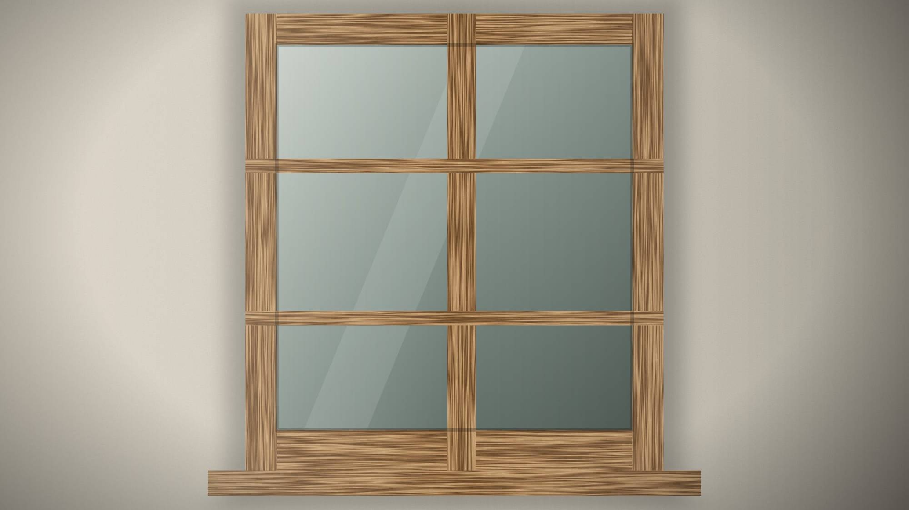

From the Workshop
Why we still build wooden windows
For most of his working life, our founder has chosen wood over plastic for windows. Not out of nostalgia — out of conviction.

For most of his working life, our founder has chosen wood over plastic when it comes to windows. People sometimes assume this is nostalgia. It is not. It is a conviction that grew slowly, one window at a time.
A window can be repaired
A wooden window is made of parts: rails, stiles, bars, glazing beads. When one part suffers — usually the bottom rail on the weather side — it can be repaired or replaced on its own. The rest of the window continues to serve.
That simple fact changes how you think about a building. A window is no longer a product with an end date. It becomes something you look after.
Wood is honest
We do not want to cover nature with plastic that imitates what already exists naturally. Wood has a grain, a colour and a weight of its own. It moves a little with the seasons. It ages, and if it is cared for, it ages well.
Every opening is different
Especially in older buildings, no two openings are quite the same. Building each window by hand allows us to follow the building rather than force it into a standard size.
What we do not claim
Questions of insulation, glazing and performance are real, and they depend on the building, the climate and the regulations. We discuss them openly for every project, rather than promising numbers on a website.
What we can promise is care: a window built slowly, for one place, so that it can stay there for a very long time.